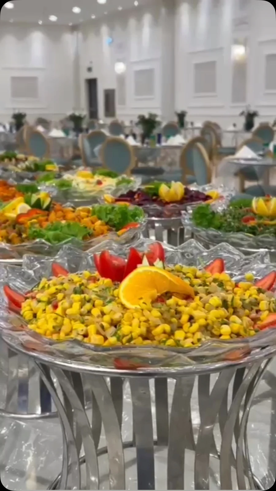
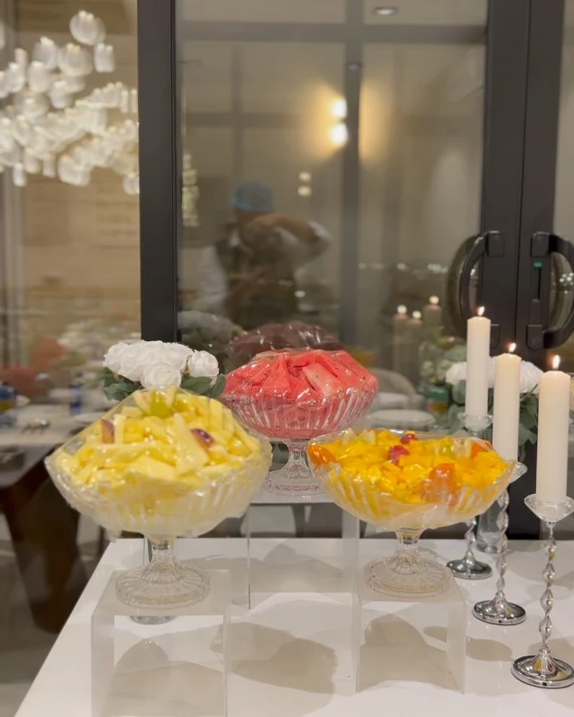

البوفيهات الخارجية
تشكيلات وتقديم للمناسبات تُنسق حسب عدد الضيوف وطبيعة اللقاء.
بريدة، حي الحزم
بوفيهات خارجية وتجهيز ولائم ووجبات سفري في بريدة. بداية المناسبة قائمة تناسب ضيوفك وطريقة تقديمك.



من لقاء عائلي إلى مناسبة أكبر، تبدأ الضيافة بتحديد عدد الضيوف والقائمة وطريقة التقديم. في بتر فود تجد بوفيهات خارجية وتجهيز ولائم وخيارات سفري في بريدة.
تشكيلات وتقديم للمناسبات تُنسق حسب عدد الضيوف وطبيعة اللقاء.
ناقش الأصناف والكميات ووقت التجهيز لتناسب مائدتك.
استفسر عن خيارات السفري المتاحة ووقت الاستلام المناسب.
نماذج مختارة من صور النشاط المنشورة. افتح الصورة لمشاهدة التفاصيل.
7 صور في المعرض
تاريخ المناسبة وعدد الضيوف ومكانها هي بداية ترتيب القائمة والتقديم والتجهيز.
اختر الخدمة وأضف التفاصيل التي تساعد الفريق على فهم طلبك. ستظهر لك رسالة جاهزة للمراجعة قبل فتح واتساب.
بريدة، حي الحزم
رابط الموقع، الحسابات، والباركود الخاص به.
فتح بطاقة التواصل